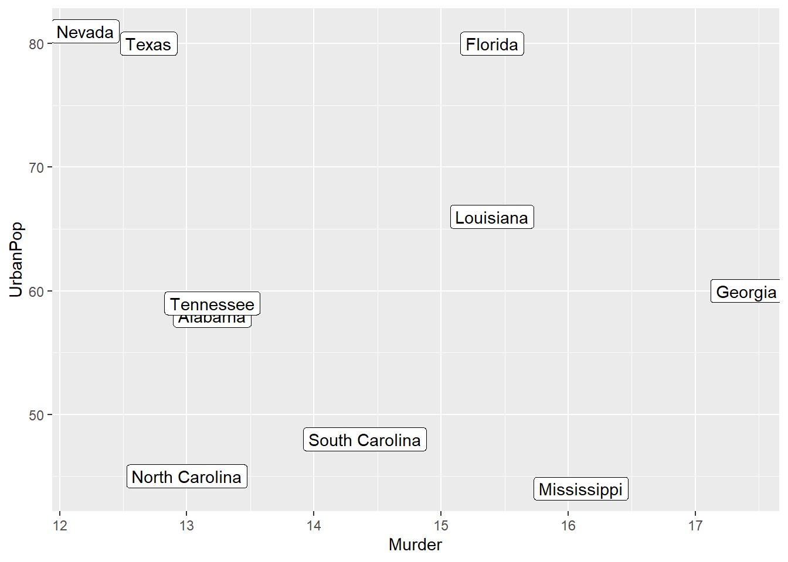
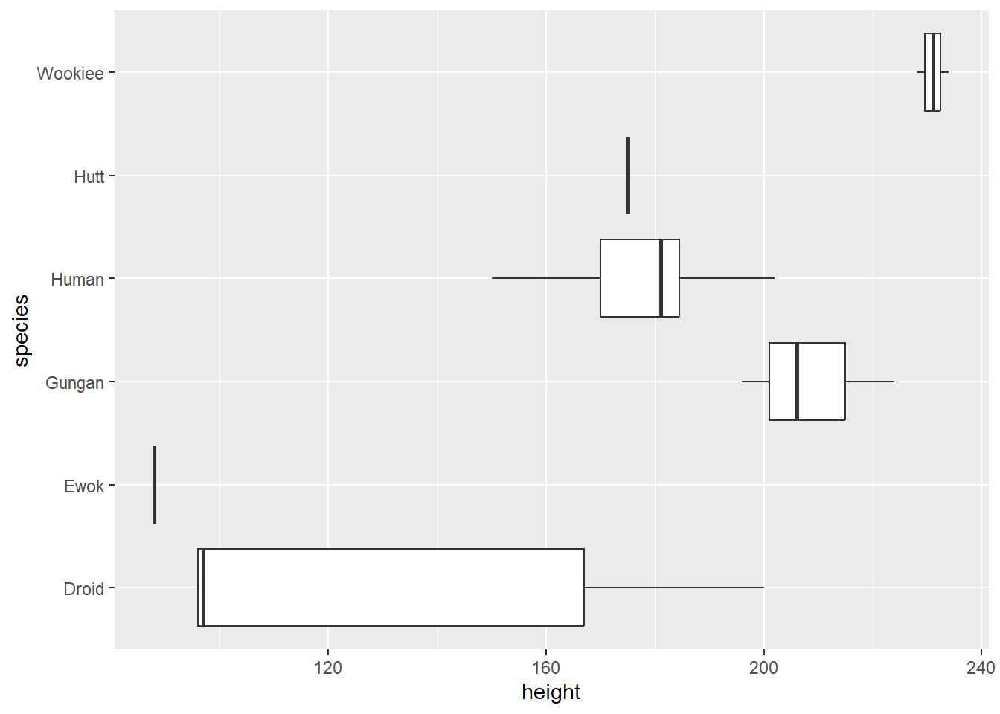

2 Data
This book/site is under construction
Everything is liable to change, even the title
2.1 Data sets
This book is about tools for creating visualizations. But to visualize data you first need data. So let’s start by taking a look at some of the data sets available to us without much hassle.
2.1.1 base R
Base R comes with a bunch of data sets ready to use. There are classics like ‘iris’ and ‘mtcars’, but there are many more to choose from:
Since the datasets package is from base R, the data is not always immediately ready to use with ggplot2 (Wickham 2024). Luckily we have the tidyverse (Wickham et al. 2023) packages that make it easy to make the necessary changes.
Here is an example using the USArrests (‘Violent Crime Rates by US State’) data set. We can start by loading the data set by using the data() function:
data(USArrests)Let’s take a quick look at what the first couple of rows of the data set looks like:
head(USArrests) Murder Assault UrbanPop Rape
Alabama 13.2 236 58 21.2
Alaska 10.0 263 48 44.5
Arizona 8.1 294 80 31.0
Arkansas 8.8 190 50 19.5
California 9.0 276 91 40.6
Colorado 7.9 204 78 38.7As you can see, USArrests is a data frame. It has four columns and the names of the US states are row names. We would like to see them as the fifth column instead. We can use the tibble (Müller and Wickham 2023) package to do that. While we’re at it, let’s also change the data frame into a tibble:
We can then use the new tibble to create a simple visualization with ggplot2:
library(ggplot2)
usarrests_tbl %>%
slice_max(Murder, n = 10) %>%
ggplot(aes(Murder, UrbanPop)) +
geom_point() +
geom_label(aes(label = State))
2.1.2 IMDb movies (1893-2005)
ggplot2movies (Wickham 2015) used to be a part of the ggplot2 package itself. It’s now its own package to make ggplot2 lighter.
But it’s a cool little package. It has Internet Movie Database (IMDb) data about movies from between 1893 and 2005. The selected movies have “a known length and had been rated by at least one [IMDb] user.” (Wickham 2015).
The Movies data set has qualities that make it good for our needs. Let’s start by loading it:
Let’s take a quick look at what some of the data looks like:
head(movies)Movies is already a tibble. It consists of 58788 rows (observations) and 24 columns (variables).
When starting to work with a new data set it’s always good to take a look at the documentation. To understand what is in those rows and columns (and what is not):
Here are some of the reasons why Movies is a good example data set because it includes:
- A goldilocks amount of data. Not too little, not too much
- Categorical data of both nominal (title, genre) and ordinal (mpaa) kind
- Numerical data of both continuous (budget, length, rating) and discrete (year, votes) kind
We can use two of those columns, year and rating to create a simple visualization with ggplot2:
As mentioned earlier, Movies is already a tibble. But, it doesn’t mean that the data is in an optimal format for all kinds of visualization. But we’ll do all the necessary data wrangling within the chapter where we use the data.
2.1.3 RDatasets
RDatasets is not an R package. But it is an excellent GitHub repo. And a “collection of datasets originally distributed in various R packages” (Arel-Bundock 2024).
Here listed are the 2337 datasets that were available on 2024-11-11:
The RDatasets repo contains that same list. But there you will also find a .csv file and documentation for each data set.
If I had to choose one fun data set from the list to highlight, it would be starwars from the dplyr package.
You can choose to use the .csv file provided on the website. Another way to use the collection is to choose the dataset from the list and load the package it comes with:
Let’s take a quick look at what some of the starwars data looks like:
head(starwars)There are a bunch of Star Wars characters and their stats.
Let’s choose two columns, height and species (and filter for six of the more well-known species). We’ll use them to create a simple visualization with ggplot2:
library(ggplot2)
starwars %>%
filter(species %in% c("Droid", "Ewok", "Gungan", "Human", "Hutt", "Wookiee")) %>%
ggplot(aes(height, species)) +
geom_boxplot()
This concludes the section about the different data sets available for every R user. Next, we’ll take a look at some of the ggplot2 extensions that make it easier to do exploratory data analysis (EDA).